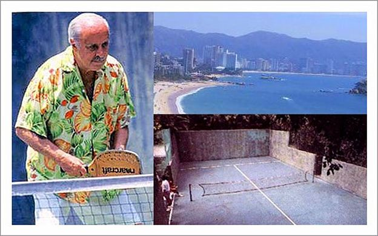

HISTORIA DEL PADEL
El pádel es un deporte con cada vez mayor número de adeptos en nuestro país y en el mundo, con especial arraigo en los países latinoaméricanos. Pero ¿dónde se inventó el pádel? ¿Quién lo inventó? ¿cómo evoluciona este deporte tan de moda actualmente?
Un momento muy importante en la historia del pádel fue comienzos de los años 20, cuando un reverendo norteamericano, basándose en el tenis, trasladó el juego a las calles y parques municipales de Nueva York. Delimitó el tamaño de la pista y se empezó a jugar con una pala corta de madera y una bola de caucho. A esta modalidad se le denominó paddle tenis, y en 1922 se creó la primera asociación de este juego.
Se empezó a practicar por parejas y los suelos de las pistas de pádel se construyeron de madera, una superficie uniforme que permitía barrer la nieve y el hielo, de ahí que el juego pasase a llamarse Platform Tennis.
El pádel nació en Acapulco (México) en 1969 cuando Enrique Corcuera adaptó un terreno de su finca de 20 x 10 metros colocando paredes en los fondos y laterales, en principio para que la vegetación no invadiera su pista. Se jugaba con palas de madera y recibía el nombre de Paddle-Tenis.
Don Enrique Corcuera, la primera pista de padel e imagen de Acapulco